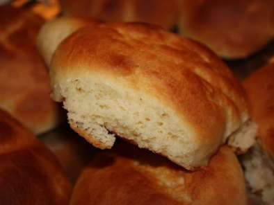

Welcome to Recetas De Bollos
Bollos de leche o Suizos
2021.06.18 21:41Recetas de rechupete Recetas de cocina caseras y fáciles
Recetas de Postres y dulces Pescado y marisco Pollo y otras carnes Arroz Pasta Ensaladas y verduras Tapas y aperitivos Sopas, guisos y legumbres Pan, masas y rebozados Patatas, salsas y guarniciones Para ocasiones especiales Bebidas, cócteles y licores Aprende a cocinar Recetas de pollo Actualidad gastronómica Recetas fáciles y baratasInicio » Recetas por tipo » Recetas de postres y dulces » Bollos de leche o Suizos
Bollos de leche o Suizos
Dificultad media 240 min. 10 pers. 3.4 / 5 115 votosPor Alfonso López
Precio: 0.3 €/persona Calorías por 100g: 305kcal Recetas de postres y dulcesIngredientes
550 g. de harina de trigo con fuerza W220, harina 000 o harina de trigo con 11,5 - 12,5 % de proteínas 120 g. de mantequilla 175 ml. de leche entera 150 g. azúcar + 30 g. de azúcar blanquilla para decorar (también valdría para decorar azúcar perlado) 3 huevos más 1 para decorar 15 g. levadura fresca prensada de panadero o 5 g. de levadura seca liofilizada de panadería. 1 cdita. sal (8 g.)Cómo preparar bollos de leche .
En todo este tiempo que llevo escribiendo y cocinando en el blog, además de aprender, mucho y sin descanso, lo que me llevo es la variedad y la gente que comparte como yo.
Intentar cocinar un poco mejor, eso dice mi novia que es la que prueba casi todas mis recetas. Pero lo que me ha gustado desde el principio es investigar sobre la receta que publico. Y muchas veces sorprenderme, sobre el origen o historia de muchas de las recetas. Este es el caso de la receta de hoy, los bollos de leche o suizos .
Hubiera jurado que la receta de esos bollos suizos que le pedía insistentemente a mi madre cada vez que pasábamos por delante de la panadería de Felisa. Era eso, una receta suiza. Pero la verdad es otra, parece ser que no sólo no son suizos sino que son de cosecha propia. De nuestro país, y es más, lo que son es castizos.
Su origen lo tenemos en los cafés madrileños de finales del siglo XIX donde se servían como parte de desayunos y meriendas. Su nombre se lo debemos a los que se preparaban en el emblemático Café Suizo , en la calle Alcalá. Fue tanto su éxito que se llegaron a pedir como los bollos del Suizo , quedando finalmente reducido su nombre a suizos.
Se trata de unos bollos tradicionalmente de forma redonda, elaborados con masa tipo brioche que se coronaban con una capa superficial de azúcar cristalizado. Se trata de bollo similar a las cristinas , los bollos de anís o los famosos bollicaos . El resultado de estos suizos es similar a los anteriores, es una masa tiernísima y ligeramente dulce perfecta para desayunos y meriendas.
Preparación de la masa para los bollos de leche
En un cazo pequeño templamos la leche y diluimos la levadura en ella. En un bol grande mezclamos la harina, la leche con levadura, los 3 huevos, el azúcar y la pizca de sal. Inicialmente con un tenedor y después con las manos comenzamos a amasar hasta formar una bola. Incorporamos la mantequilla a la bola de masa. Es imprescindible que la mantequilla esté a temperatura ambiente para poder trabajarla con el resto de ingredientes. Al principio, cuando incorporamos la mantequilla la masa se volverá muy pastosa y pegajosa. Serán necesarios unos 10 minutos de trabajo de amasado para comenzar a ver que la masa comienza a no pegarse a la mesa de trabajo. Amasamos en total no menos de 20 minutos hasta conseguir una masa brillante y que ya no se pegue ni a las manos ni a la mesa de trabajo. Untamos un bol con mantequilla e introducimos la masa. Dejaremos reposar la masa durante unas 2 horas en un lugar templado hasta que haya doblado su volumen. Yo suelo dejar las masas dentro del horno templado y apagado. Pasado este tiempo la masa habrá crecido considerablemente. La aplastamos con las manos para desgasificar. Para eliminar las burbujas de aire que se han formado durante el proceso de fermentación.Horneado y presentación final de los bollos de leche
Dividimos la masa en porciones de iguales, de más o menos 50 gramos de peso. Formamos una bola uniforme con la manos y las vamos colocando en la bandeja definitiva que emplearemos para hornearlas, sobre un papel vegetal. Volvemos a dejar que las porciones fermenten de nuevo hasta que doble su volumen, unas 2 horas más. Precalentamos el horno a 180º C y pintamos cada bollo con huevo batido y unas gotas de leche. Con un cuchillo afilado les hacemos un corte profundo a cada uno. Espolvoreamos azúcar (blanquilla o azúcar perlado , al gusto de cada casa) sobre cada corte e introducimos en el horno. Horneamos a 180º C durante 12 minutos en la bandeja del medio del horno con calor arriba y abajo. Sin aire para que no se resequen. Retiramos la bandeja con los bollos de leche del horno y los desplazamos a una rejilla hasta que se hayan enfriado totalmente. Por lo menos unos 10-15 minutos.De esta manera, fácil y sencilla, podremos disfrutar en casa de los clásicos bollos suizos o bollos de leche .
Consejos para unos bollos suizos de rechupete
Podemos disfrutar de los clásicos suizos en cualquier momento del día. Pero creo que vuestros niños los agradecerán como merienda con un vaso de leche. Si tenéis robot de cocina amasador la receta va a ser muy sencilla. Basta con ponerle el gancho para pan y amasar a media velocidad hasta que la masa se os levante y podáis hacer la prueba de la membrana. Un consejo para que os salgan los bollos con un color más bonito es pincelar huevo mezclado con unas gotas de leche sobre los bollos suizos antes de meterlos al horno. Os quedará una corteza perfecta. Y antes de hornear, para darle el toque dulce os aconsejo añadir un poquito de azúcar blanquilla granulada o azúcar perlado. Le dará un punto dulce y crujiente. A la hora de hornear para que no se queme la superficie os recomiendo tapar los bollos de leche con papel de aluminio para evitar que se tueste demasiado su superficie. Lo que yo suelo hacer es cocinar los bollos durante 5 minutos y taparlos con el papel de aluminio durante el resto del horneado. Podemos tunear este dulce añadiendo trocitos de chocolate en su interior en el momento de hacer las bolas. También frutas escarchadas o simplemente solos con una taza de chocolate caliente .Por Alfonso López
Empecé Recetasderechupete.com en 2009. En estos años he escrito recetas y libros, grabado vídeos, he dado cursos presenciales y clases en escuelas de hostelería. Y cocinar para mi familia y amigos sigue siendo mi gran pasión. En esta web quiero compartir contigo toda mi experiencia, para que disfrutes de la cocina tanto como yo y todos tus platos salgan de rechupete.
¿Te ha gustado? ¡Compártelo!
Compartir Twittear Pin it ImprimirRecibe un email semanal con las nuevas recetas y recomendaciones de rechupete.
Piensa en Pixels S.L como titular de Recetasderechupete.com, usará los datos que proporciones en este formulario únicamente para enviarte las actualizaciones del blog. Tratamos tus datos con respeto. Para más información consulta la Política de privacidad . Puedes cambiar de opinión en cualquier momento y desuscribirte haciendo clic en el pie de cualquier email que recibas de esta web, o contactando a hola@piensaenpixels.com. Recetas de rechupete usa Mailchimp como plataforma en envío de emails. Mailchimp está acogido al acuerdo EU-US Privacy Shield, aprobado por el Comité Europeo de Protección de Datos. Al enviar este formulario apruebas que tus datos sean transferidos a MailChimp para procesarlos de acuerdo a su Política de Privacidad .
Si te ha gustado esta receta te gustará:
Cómo preparar churros caseros
Orejas de Carnaval. Receta paso a paso
Roscón de Reyes. Receta navideña
Si te ha gustado esta receta o tienes alguna duda de cómo hacerla deja un comentario
Mildred dice: 9 abril, 2016 a las 17:44Se ven riquísimos,voy a tratar .ojalá me queden igualitos
Responder Antonia dice: 10 abril, 2016 a las 19:43 Tienen una pinta estupenda mañana la pongo en práctica
Espero me salgan igual
Hola, soy de Argentina. Qué es la harina de fuerza? harina de trigo 0000?
Responder Alfonso dice: 6 julio, 2016 a las 16:57 Exacto, si estás en Argentina, donde se sigue esta manera de diferenciarlo. La harina 000 se utiliza siempre en la elaboración de panes,
con ella se consigue un buen leudado sin que las piezas pierdan su forma. La harina de fuerza 0000 es para repostería.
Gracias Alfonso por la respuesta!!!!
Responder Fran dice: 10 marzo, 2017 a las 11:45 Hola. Es la segunda vez que los hago, la primera amasé a mano y perfecto. Pero eso me motivo a comprar un robot de cocina ;-p
Pero ayer, los hice, con el robot, y no me levó. Me quedó masa pura. Entiendo que seguí la receta bien, pero no se si el hecho de hacerlo con robot de cocina, requiere un procedimiento especial. (use un gancho y la velocidad 2 de cuatro que pone). Gracias por la ayuda.
Fran! No tengo robot de cocina pero supongo que por supuesto será más fácil. Debería de salir igualmente
Esther dice: 13 marzo, 2017 a las 15:00 Estimado Alfonso. Muchas gracias por tu receta. Tal cual han salido unos 20-21 bollitos deliciosos que he tenido que repartir entre mis compañeros de trabajo .por cierto, he usado harina de trigo 550 (en Alemania parece que es la que corresponde a este tipo de masas dulces).
Otra cosa, al contar solo con dos huevos, le he puesto un poco mas de leche a la masa . y finalmente los he tenido un poquillo mas en el horno: como unos 15 minutos en total. Pero vamos, perfectos! Y parece que al resto tambien les ha gustado mucho!
Ole, ole y olé!! :-)))) Pues a seguir con más recetillas de rechupete. Muchas gracias por tu comentario Esther!!
Isi Araúzo dice: 4 septiembre, 2019 a las 19:55 Alfonso, me gustaría saber si se puede amasar ésta pasta con robot de cocina.
Gracias !!!
Claro! Mucho más fácil Espero que te gusten estos bollos suizos :-)
Deja una respuesta Cancelar la respuesta
Este sitio usa Akismet para reducir el spam. Aprende cómo se procesan los datos de tus comentarios .
Hoy se habla de
Arroz con leche Tarta de queso Tiramisú casero Salmón marinado Muhammara Tacos al pastor Leche frita VichyssoiseRecibe un email semanal con las nuevas recetas de rechupete.
SuscríbeteRecetas
Recetas por orden alfabético Postres y dulces Carnes, pollo y otras aves Sopas, guisos y legumbres Arroz Pasta Pescado y marisco Panes, masas y rebozados Ensaladas y verduras Patatas, salsas y guarniciones Tapas y aperitivos Bebidas, cócteles y licores Para ocasiones especiales Recetas por temática Recetas fáciles Cómo hacerAprende a cocinar
Cursos de cocina Imprimibles Ingredientes y alimentos Utensilios y menaje de cocina Productos de temporadaCultura gastronómica
Actualidad gastronómica Libros de cocinaLas mejores recetas
Albóndigas en salsa. Receta fácil al estilo de mi abuela Cómo hacer churros Cordero al horno o asado Estofado de ternera Guacamole mexicano fácil Lasaña de carne casera. Receta tradicional paso a paso Masa de pizza italiana Pollo al curry Fideuá de marisco y pescadoDe temporada
Ensalada de pasta fácil y deliciosa. Receta perfecta para el buen tiempo Arroz chaufa Cómo hacer el mojito perfecto Ensalada de arroz con atún. Receta fácil y fresquita Ensalada campera o ensalada de Verano Cómo hacer gazpacho andaluz casero. La receta tradicional más fácil para el verano Cómo hacer salmorejo cordobésRecetas baratas
Pollo asado fácil Tortilla de patatas Lentejas con chorizo Arroz con pollo Bizcocho de yogurt Brownie de chocolate Tortitas o pancakes caseros Hummus o crema de garbanzos 830.000 213.000 94.000 78.000 28.000 23.000 © 2009-2021 Recetas de rechupete - Todos los derechos reservados Términos de uso · Política de privacidad · Política de cookies
Diseñado por PIENSA en PIXELS · Cloud hosting con StackScale
